7210B70 REAR TRIM
- Path
- Procedures > 72 PANELS AND FRAME > 7210 REMOVING REFITTING > 7210B STRUCTURE ELEMENTS-CENTRAL AND REAR PART > 7210B70 REAR TRIM
- Kind
- repair procedure (removal / refitting; the operation number is the code)
- Applies to
- all engines; all production periods
- Interactive page
- https://sloeber94.github.io/elrnDB-fUlss/en/#/179007963
Applies to: all engines; all production periods
Applies to: all engines; all production periods
 Removing
Removing
 Refitting
Refitting- Work on the component highlighted previously making sure that the equipment illustrated below is available.
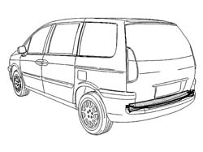
Applies to: all engines; all production periods
1. Rear panel
2. Assembled rear panel box section
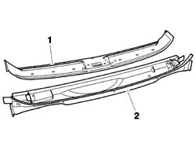
Applies to: all engines; all production periods
- Check that the components connected are not distorted by checking the bodyshell alignment measurements using suitable equipment (gauges, templates or jigs).
- Trace then, using a Æ 6.5 mm drill bit, drill holes in the rear panel as illustrated in the diagram.
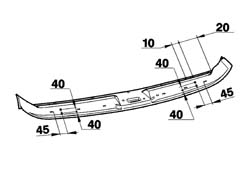
Applies to: all engines; all production periods
- Using a 1 mm thick grinder, partly cut the panel at the sections shown (A) then, using a chamfering machine, reduce the spot welds illustrated.
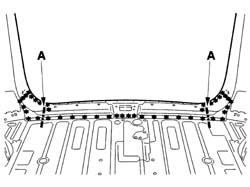
Applies to: all engines; all production periods
- Working symmetrically on both sides, partly lift the panel then, using a chamfering machine, reduce the spot welds indicated.
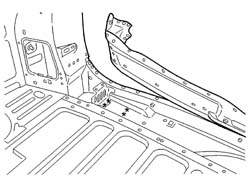
Applies to: all engines; all production periods
- Working symmetrically on both sides and using a chamfering machine, reduce the spot welds indicated.
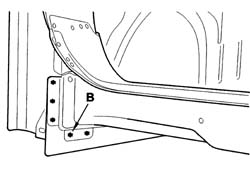
Applies to: all engines; all production periods
- Using a chamfering machine, reduce the spot welds indicated then, remove the rear box section/panel assembly.
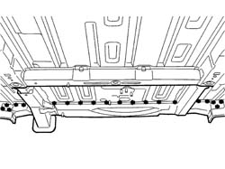
Applies to: all engines; all production periods
- Remove the residues from the bodyshell using a disc grinder and apply electro-galvanizing paint.
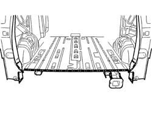
Applies to: all engines; all production periods
- Move the end of the pillar as indicated by the arrow and adjust the panel box section either using a gauge or through mechanical or electronic measurements.
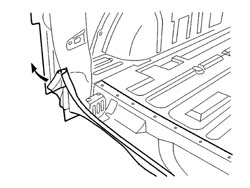
Applies to: all engines; all production periods
Refitting
Removing- Position the rear panel box section and fasten it using self-locking clamps then, after having checked the alignment, proceed with the fitting as described below.
- Fill weld in the areas (C) shown in the diagram.
- Using a spot welder, weld the rear panel box section as illustrated in the diagram.
- Remove the residues from the replacement parts using a disc grinder and apply electro-galvanizing paint.
- Fit the rear panel.
- Adjust the rear panel using using a gauge or mechanical or electronic measuring equipment.
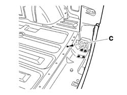
Applies to: all engines; all production periods
- MIG fill weld in the areas (D) shown in the diagram.
- Remove the residues from the replacement parts using a disc grinder and apply electro-galvanizing paint.
- Using a spot welder, weld the rear panel box section as illustrated in the diagram.
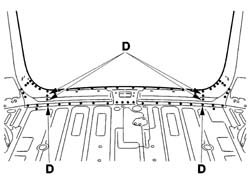
Applies to: all engines; all production periods
- Using a spot welder, work symmetrically on both sides as illustrated in the diagram.
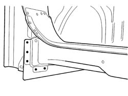
Applies to: all engines; all production periods
- Using a spot welder, work symmetrically on both sides as illustrated in the diagram.
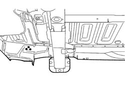
Applies to: all engines; all production periods
- Apply sealing compound along the lines illustrated in the diagram.
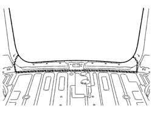
Applies to: all engines; all production periods
- Check that the welded component is correctly positioned.
- Apply electro-galvanizing paint to the ground parts.
- Proceed with waxing the box sections.